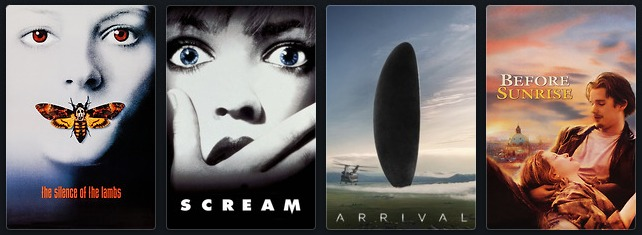

Sobre este site
Este site apresenta quatro filmes que marcaram meu interesse por cinema, cada um em uma página separada para facilitar a leitura.
A ideia é manter uma estrutura semântica clara e usar imagens para ilustrar cada filme e o conjunto principal.
Lista dos filmes
Os filmes estão ordenados pelo impacto pessoal que tiveram na minha forma de ver histórias.

Porque gosto desses filmes
Estes são alguns elementos que me atraem neste conjunto de filmes.
- Histórias intensas e personagens complexos.
- Direção de fotografia e ambientação marcantes.
- A maioria deles está no gênero terror, porém há um exemplo de ficção científica e um de romance
Referências externas
Para conhecer mais sobre cinema e descobrir outros filmes interessantes, confira uma fonte confiável.
Letterboxd